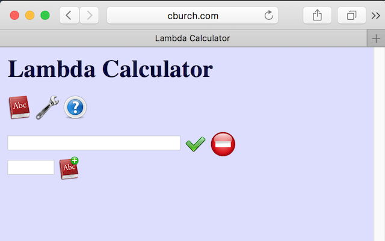
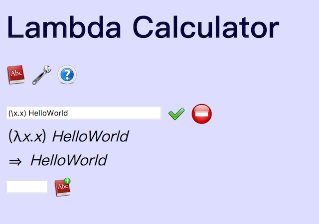
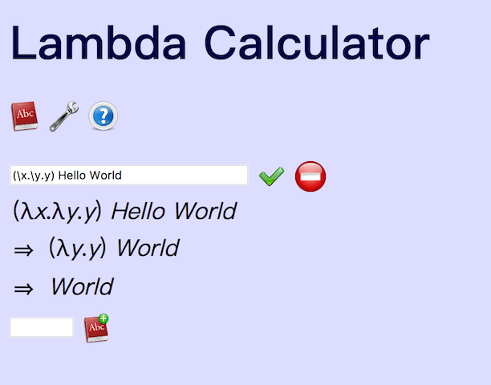

面向眼科医生的λ演算入门教程(1)
与计算机语言有关，当然要写Hello World！
Hello World
Lambda calculus的运算只做一件事情，就是字符替换，很类似于word里面用ctrl+H做查找与替换。我们来实际演示一下，请打开这个页面http://www.cburch.com/lambda/ （最好使用Chrome浏览器，Safari貌似有一点点小问题）

这是一个Lambda Calculator解释器（lambda calculus interpreter，LCI），如果搜索online lambda calculus interpreter能够找到很多类似的。
学习所有的计算机语言，大家都会写个HelloWorld！我们也可以用这个LCI写下第一个Lambda 表达式：
(λx.x) HelloWorld
不过，要输入λ比较麻烦，所以在这个解释器中，使用左斜杠"\"来表示λ

解释一下这句话都含义：
λx. 有三个字符构成，λ、x和点. ，注意别忘了那个点.
- λ这个表示要定义一个函数，但是这个函数没有名字，叫做匿名函数，（突然想起未名湖难道是数学系起的名字？）。
- x是一个ID，表示这个函数的变量是x。
- 点. 表示这个点的右侧要定义函数的具体内容了。
λx.x 这就是一个lambda表达式（expression）了说的是，有个匿名函数，自变量是x，函数的定义就是返回x本身。类似于写下了 f(x)=x
(λx.x) HelloWorld 说的是，要把HelloWorld这个字符串作为参数，替换掉函数体内的自变量，也就是把x替换成HelloWorld。
相当于已知f(x)=x, 求x=HelloWorld时，f(x)
所以就显示出HelloWorld了。
怎么样？
相！当！无！聊！吧！
其实所有的Hello World都是这么无聊的。
那么我们来个复杂的：
(λx.λy.x) Hello World

当你照此输入以后居然显示了奇怪的事情。容我解释。
lambda expression（λ表达式)是可以嵌套的
λx. 说的是要定义一个函数啦，函数的自变量是x，在函数的定义里是
λy.x 也就是说作为函数的定义，又是一个函数，它的自变量是y，它的函数定义是什么呢？就是返回一个x。注意这里函数体里面并没有自变量y，而是一个与y无关的ID，里面这一层的x叫做自由变量free variables。free variables是由上一层的函数给出的，不受这一层函数自变量y的约束。
Hello World我在中间加入里空格，这样在lambda expression里面的含义相当于((λx.λy.x) Hello) World
也就是先把Hello代入到λx.λy.x里面，替换函数定义λy.x中自变量x，
于是
(λx.λy.x) Hello World
⇒ (λy.Hello) World
接着，把World代入到λy.Hello里，替换函数定义Hello中所有的y，
咦，这里没有y，总是返回Hello，那好吧，不管代入的是什么，都返回Hello，于是
(λy.Hello) World
⇒ Hello
λx.λy.x起到了一个选择器件的作用，给它两个参数，它就会选择出第一个。
我们再试试
(λx.λy.y) Hello World

首先，我们把Hello当成x，替换掉λx.λy.y中函数体λy.y里面所有的x。哦，没x，于是扔掉Hello，变成了
(λx.λy.y) Hello World
⇒ (λy.y) World
接着，我们把World当成y代入到λy.y的函数体y里面，替换掉所有的y，于是
(λy.y) World
⇒ World
λx.λy.y起到了另一个选择器件的作用，给它两个参数，它就会选择出第二个。
注释
Comments powered by Disqus